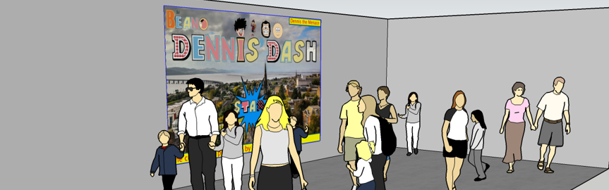
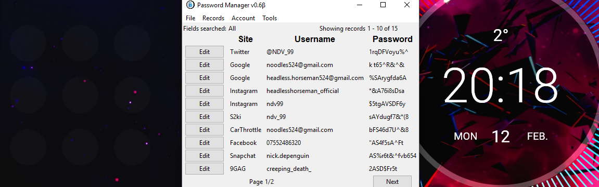

This website don't click me
 I created this website as part of my coursework for my web authoring module at the University of Dundee. It functions as a personal portfolio site, with information about me and my projects, as well as my contact details and social links.
I created this website as part of my coursework for my web authoring module at the University of Dundee. It functions as a personal portfolio site, with information about me and my projects, as well as my contact details and social links.
Dennis' Dash
 This was a group project with design students at UoD - we had to create an interactive installation for a new (theoretical) 'Dundee Room' at the V&A, which focused on a key aspect of Dundee's history/culture - we chose the Beano comics.
CS:GO Documentary
 I made this small project in Q1 of 2017 to look at the game Counter-Strike: Global Offensive, and why it was so successful. As a casual player, this was a very interesting documentary to research and put together. It's a bit outdated but still informative.
I made this small project in Q1 of 2017 to look at the game Counter-Strike: Global Offensive, and why it was so successful. As a casual player, this was a very interesting documentary to research and put together. It's a bit outdated but still informative.
Tkinter Password Manager
 For my A-level Computer Science coursework, I created a password manager in Python 3, using Tkinter to make my GUI. It includes a password checker, random (secure) password generator, and a hand-made vernam cypher encryption module.